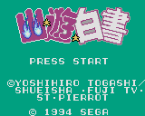
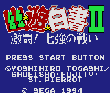

Yuu Yuu Hakusho - Game Gear Games
Table of Contents
|
Series Information
|
Gameboy Games
Game Gear Games
|
Genesis Games
|
SNES Games
Yuu Yuu Hakusho
|
Yuu Yuu Hakusho 2
Yuu Yuu Hakusho

Genre:
Platform game
Controls
A button
: Attack
B button
: Jump
Start
: Pause
You can choose from Yusuke, Hiei, Kuwabara, and Kurama to battle your way through the levels.
Yuu Yuu Hakusho 2

Genre:
Cinematic fighting game
FAQ available
at
KageKaze no Homepage
Anime Video Game Resource Center © 1998 by
Luis A. Cruz